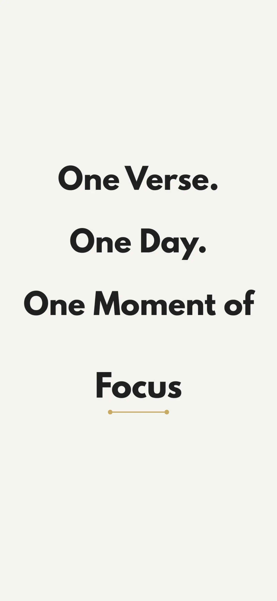

Bible Focus › Guides › Verses About Focus
Bible Verses About Focus and Stillness: Quieting Your Mind Before God
Long before smartphones, Scripture was already talking about the war for our attention — wandering hearts, divided minds, anxious thoughts. The Bible's answer isn't "try harder to concentrate." It's an invitation: be still, look up, fix your eyes. Here are the verses believers return to when their minds won't settle.
On stillness before God
"Be still, and know that I am God: I will be exalted among the heathen, I will be exalted in the earth."Psalm 46:10 (KJV)
The most quoted stillness verse in the Bible — and notice its context: it's spoken into upheaval, not calm. Stillness here isn't the absence of chaos around you; it's the choice to stop striving and remember who God is, in the middle of it.
"Rest in the LORD, and wait patiently for him."Psalm 37:7 (KJV)
On trusting instead of overthinking
"Trust in the LORD with all thine heart; and lean not unto thine own understanding."Proverbs 3:5 (KJV)
Half of our distraction is mental churn — replaying, forecasting, problem-solving in circles. This verse names the alternative: hand the weight over. A quiet mind isn't emptied; it's entrusted.
On where to fix your eyes
"Looking unto Jesus the author and finisher of our faith."Hebrews 12:2 (KJV)
"Set your affection on things above, not on things on the earth."Colossians 3:2 (KJV)
"Thou wilt keep him in perfect peace, whose mind is stayed on thee."Isaiah 26:3 (KJV)
Biblical focus is less about shutting things out and more about locking onto something better. Peace, Isaiah says, follows a mind that stays — parked, settled, kept — on God.
On thoughts worth thinking
"Whatsoever things are true… honest… just… pure… lovely… of good report; if there be any virtue, and if there be any praise, think on these things."Philippians 4:8 (KJV)
Paul's filter for the mind — written centuries before the algorithmic feed, and a better content policy than any of them.
How to actually sit with these verses
A list of verses skimmed is like water past a window — read one slowly, though, and it soaks in. That's the whole design of Bible Focus:
- One verse a day — a single chosen passage, like Psalm 46:10, presented with room to breathe.
- Read → Reflect → Respond → Pray — a gentle path through the verse, about 3 minutes (see how to start a daily devotional).
- Distractions blocked — while you sit with the verse, your distracting apps stay locked. Stillness, structurally protected.
- Write what stays — one honest line about the word that stuck. "The word 'still' stayed with me today. I don't know how to be still yet." That's the practice.

One verse a day, undistracted
Today's verse is waiting · Free on iOS